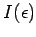
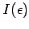
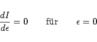

Inhalt Index DeskTop Bronstein

 Variationsrechnung Variationsaufgaben mit Funktionen mehrerer Veränderlicher
Variationsrechnung Variationsaufgaben mit Funktionen mehrerer Veränderlicher


Eine der einfachsten Aufgaben mit Funktion von mehreren Variablen stellt das folgende Variationsproblem für ein Doppelintegral dar:
Dabei soll die gesuchte Funktion u =u(x,y) auf dem Rand  des Bereiches G gegebene Werte annehmen. Analog zum Abschnitt EULERsche Differentialgleichung werden Vergleichsfunktionen der Form
des Bereiches G gegebene Werte annehmen. Analog zum Abschnitt EULERsche Differentialgleichung werden Vergleichsfunktionen der Form
angesetzt, wobei u0(x,y) eine Lösung der Variationsaufgabe (10.44) ist und die vorgegebenen Randwerte annimmt, während die Bedingung
| (10.46) |
erfüllt und wie u0(x,y) entsprechend oft partiell differenzierbar ist.
Die Größe  ist ein Parameter. Durch u =u(x,y) wird eine Fläche beschrieben, die der Lösungsfläche u0(x,y) benachbart ist. Mit (10.45) geht I[u] in  über, d.h., aus der Variationsaufgabe (10.44) wird eine Extremwertaufgabe, die die notwendige Bedingung
ist ein Parameter. Durch u =u(x,y) wird eine Fläche beschrieben, die der Lösungsfläche u0(x,y) benachbart ist. Mit (10.45) geht I[u] in  über, d.h., aus der Variationsaufgabe (10.44) wird eine Extremwertaufgabe, die die notwendige Bedingung
|  | (10.47) |
erfüllen muß. Daraus folgt die EULERsche Differentialgleichung
| (10.48) |
als notwendige Bedingung für die Lösung der Variationsaufgabe (10.44).
| Beispiel |
|
Eine unbelastete Membran, die am Rand |
| (10.49a) |
Wird die Membran durch eine Belastung so deformiert, daß jeder Punkt eine Auslenkung u =u(x,y) in z-Richtung erfährt, dann wird ihr Flächeninhalt nach der Formel
berechnet. Linearisiert man den Integranden in (10.49b) nach TAYLOR, dann erhält man die Beziehung
 |
(10.49c) |
Für die potentielle Energie U der deformierten Membran gilt
| (10.49d) |
wobei die Konstante  als Spannung der Membran bezeichnet wird. Auf diese Weise entsteht das sogenannte DIRICHLETsche Variationsproblem: Die Funktion u=u(x,y) ist so zu bestimmen, daß sie das Funktional
als Spannung der Membran bezeichnet wird. Auf diese Weise entsteht das sogenannte DIRICHLETsche Variationsproblem: Die Funktion u=u(x,y) ist so zu bestimmen, daß sie das Funktional
 |
(10.49e) |
zu einem Extremum macht und auf dem Rand  des ebenen Gebietes G verschwindet. Die zugehörige EULERsche Differentialgleichung lautet
des ebenen Gebietes G verschwindet. Die zugehörige EULERsche Differentialgleichung lautet
| (10.49f) |
Es handelt sich um die LAPLACEsche Differentialgleichung für Funktionen von zwei Variablen.